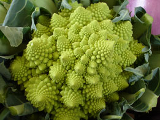
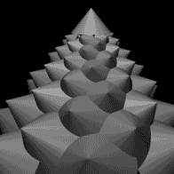
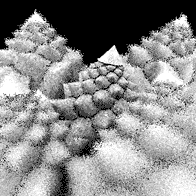
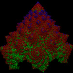
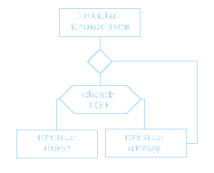

This page demonstrates the basics of scripting shapes RenderMan scene description (rib) protocol. Writing rib files by hand focuses attention on the use of color, opacity and the fundamental concepts related to xyz coordinate system.
The preliminary renders have been done using basic shading so that the geometry can be more easily seen.

For this project I have chosen my favorite fractal vegetable
Romanesco Broccoli (
Brassica oleracea). The flower is composed of spirally arranged segments which are identical copies of the whole flower. The copying process continues
ad infinitum as a 3D fractal form. The mathematical beauty and simplicity of this flower never stops to amaze me.
Creating this amount of geometry without using Maya or any tool other than Cutter was challenging. However, the only problem was finding the right values for one transformation and repeat it many times.
TransformBegin
Cone 2 1.2 360
TransformBegin
Translate 1.6 0.53 -0.1
Rotate -8 1 0 0
Rotate 24 0 1 0
Rotate 15 0 0 1
Scale 0.98 0.98 0.98
Cone 2 1.2 360
TransformBegin
...

This is the code that I used to create the basic spiral helix from cones. This code (excluding first three lines)is repeated nearly 200 times to create the the first level of cones. At the end of the RIB file, corresponding number of TransformEnd statements is added to complete the nesting. Then, I used that RIB file as an archive that will substitute the cone in the next level of modeling. Before doing that, I had to apply transformations to the archive to align it with the original cone. For that purpose, I made another intermediate archive. After that, it was all about the repeating the same code from above with
ReadArchive command instead of
Cone. To make the process faster, I used find and replace tool.
In the next stage I reduced the amount of geometry by replacing the tiny cones on the top with a single larger cone.

The image on the left shows depth of field. The effect is setup by adding fallowing statements before camera transformations.
DepthOfField 0.5 0.05 3
The statement includes three parameters.
f-stop, focal length, focal distance. The graininess is reduced by applying higher pixel sampling rates.
PixelSamples 8 8
PixelFilter "box" 2 2
Hider "hidden" "jitter" [0]


Since rendering of four generation broccoli turned out to be extremely slow becouse of huge number of cones (2003=1.600.000.000 quadric cones), I decided to employ "level of detail" technique to reduce the amount of geometry. The technique is described in LOD page. The image on the left shows three different generations of LOD loops. Although render time was significantly shorter, pre-render time and memory allocation has doubled. It is because entire rib file was generated even though most parts of it were ignored during render. Fortunately, there is a solution for this problem. It is use of Procedural DelayedReadArchive insted of regular ReadArchive. This statement will read an arcive only if it is visible. Moreover, it made possible to create an infinite loop which I wanted to create from the very beginning. It will allow me to create an infinite fractal zoom as shown in the video below. A simplified algorithm of the infinite loop is above.
{kind=link}
{kind=link}
{kind=link}